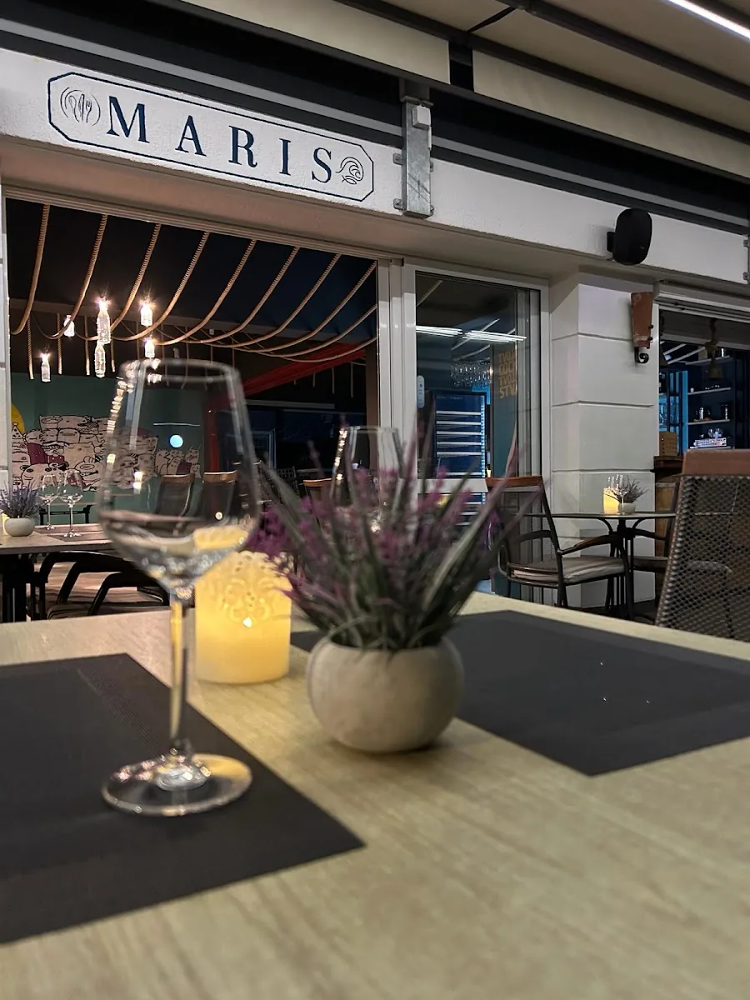

Gdje smo
Uz gat, od jutra do ponoći
Maris stoji na adresi Artina ul. 13a, u ACI marini u Vodicama. Terasa je nekoliko koraka od gata, a pogled ide na jarbole i zaljev. Kuhinja radi svaki dan od 8 do ponoći.
Doručak se poslužuje do podne, dok posade doručkuju prije isplovljavanja: jaja, omleti, doručak kuće s pršutom i kulenom. Poslije podne radi roštilj, a s njega dolaze lignje i riba s gradela, ramstek, biftek te T-bone i ribeye po kili.
Jelovnik je otisnut na hrvatskom, engleskom i njemačkom. Na Googleu Maris ima ocjenu 4,9 iz 536 recenzija.